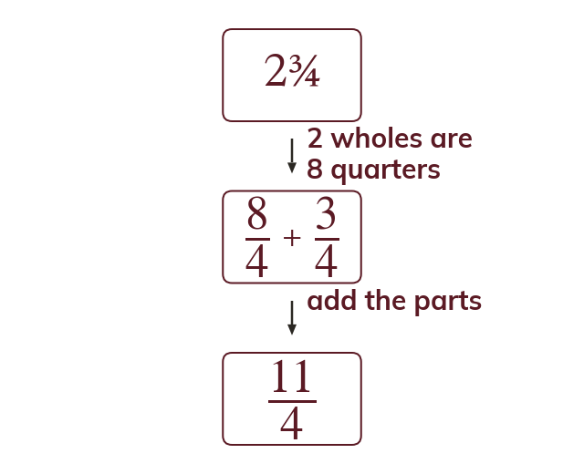

Convert first
Convert mixed numbers to improper fractions before multiplying or dividing. 2 34 = 84 + 34 = 114.
Mixed numbers are converted to improper fractions before multiplying or dividing. Each whole is one denominator's worth of parts, so 2 34 = 84 + 34 = 114.